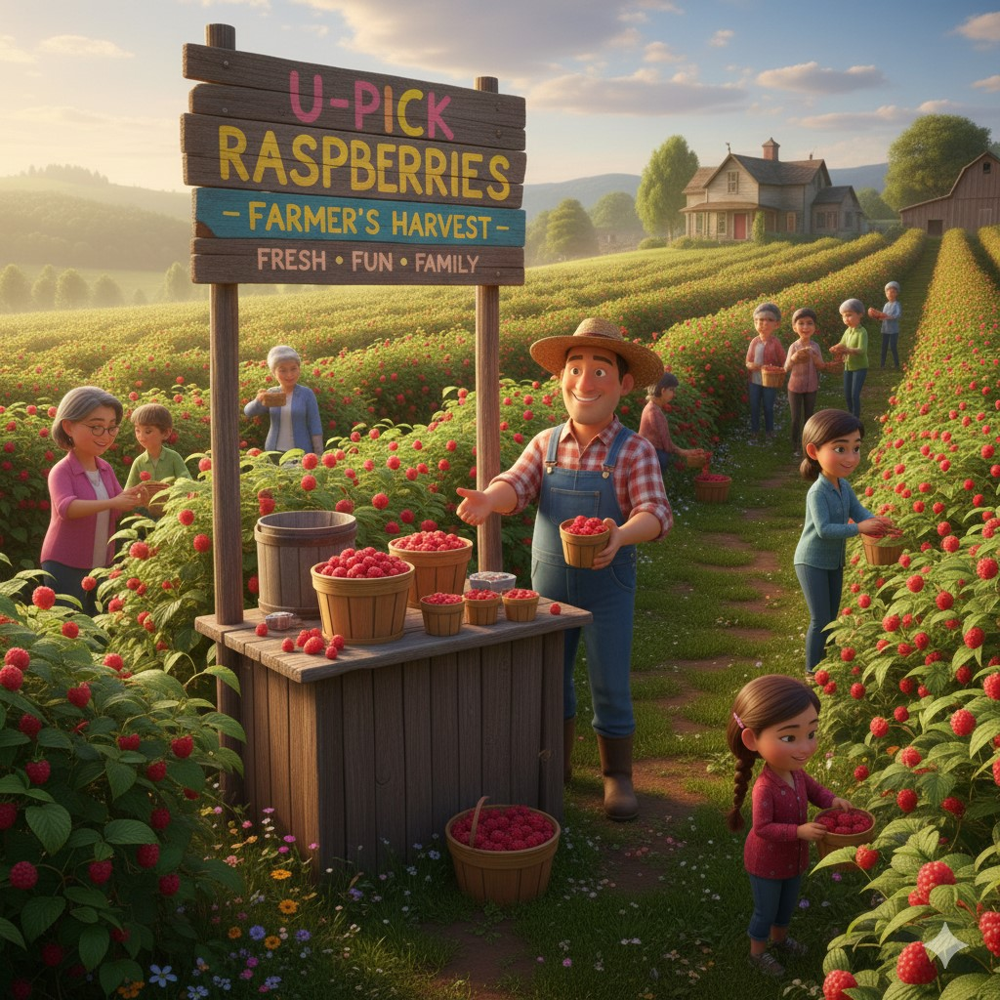
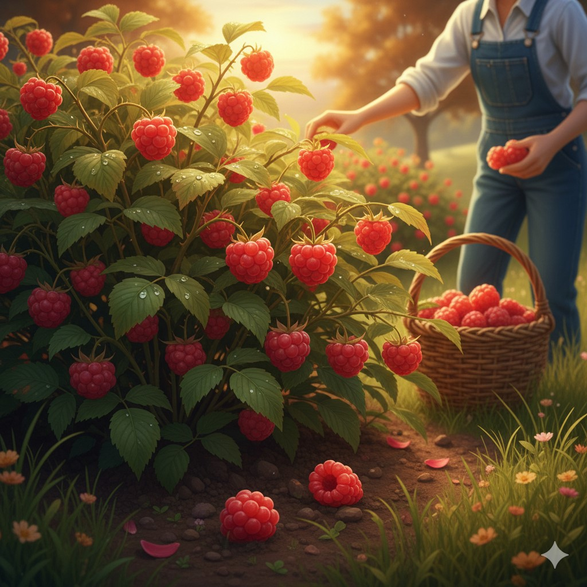
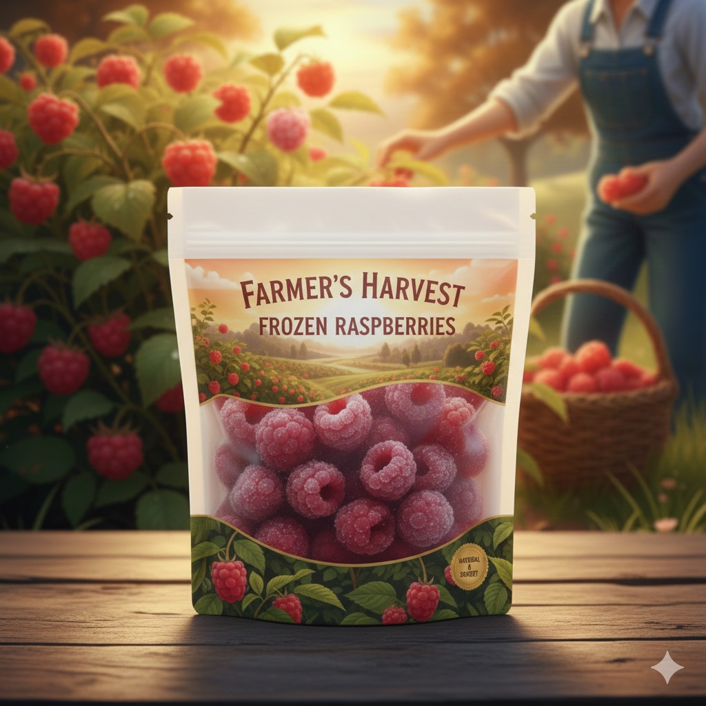
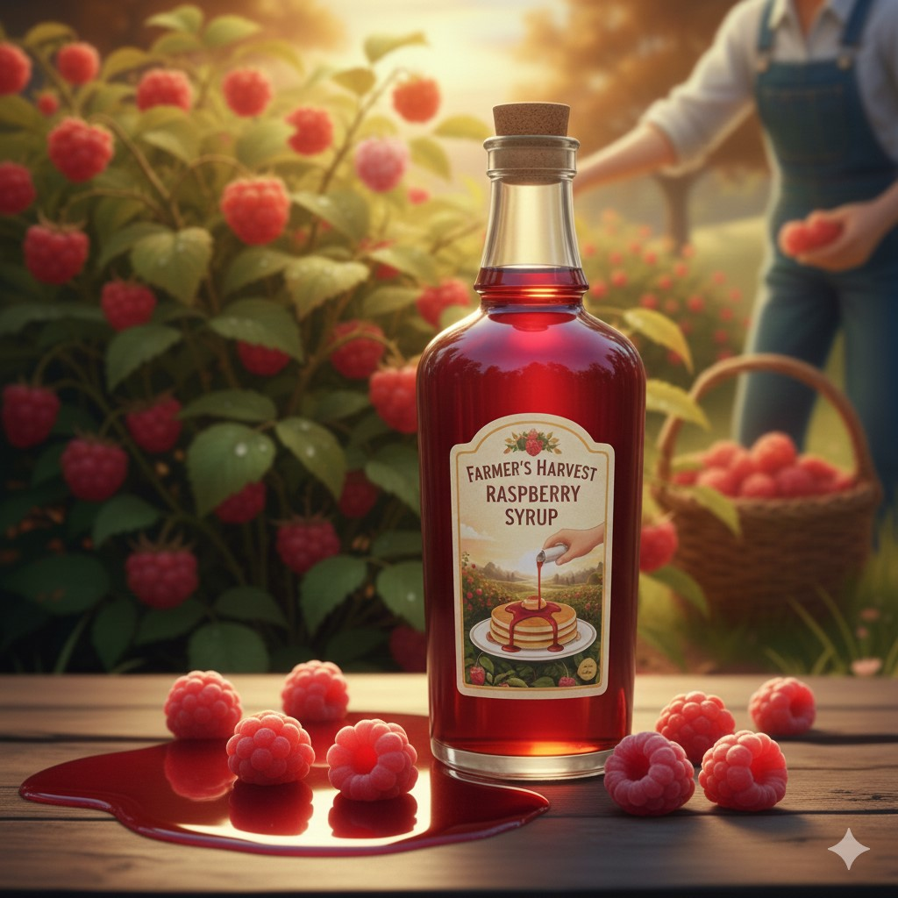
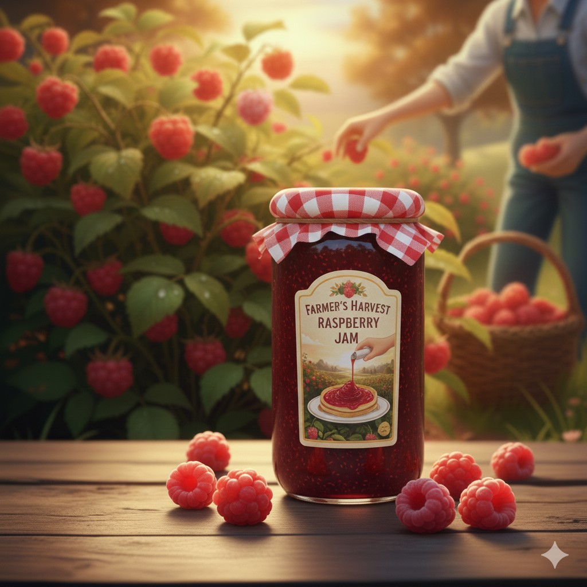

TRADICE • KVALITA • UDRŽITELNOST
Vychutnejte si chuť léta po celý rok.

Užijte si zážitek ze samosběru! Maliny natrhané přímo vámi jsou nejlepší. Skvělá rodinná aktivita.

Pro ty, kdo nemají čas. Čerstvé, ručně natrhané maliny, připravené k okamžité konzumaci.

Perfektní pro koktejly, snídaňové misky nebo pečení po celý rok. Mrazíme ihned po sklizni.

Vynikající domácí malinová šťáva bez chemických přísad. Ideální pro osvěžující limonády.

Tradiční marmeláda s vysokým obsahem ovoce, vařená s láskou. Skvělá na palačinky.